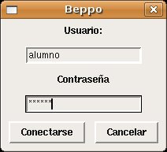
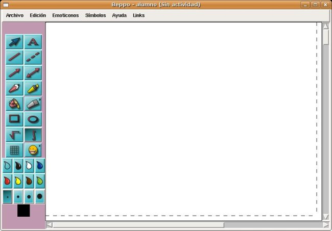
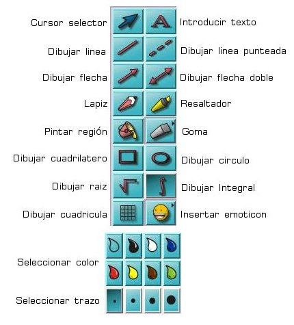
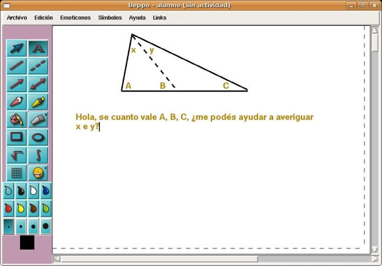
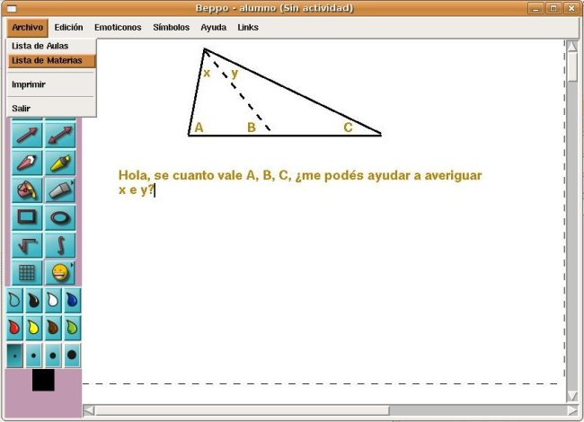
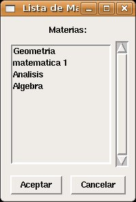
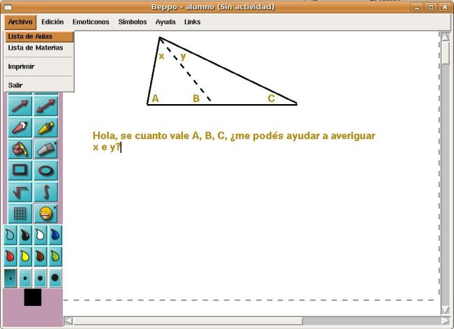
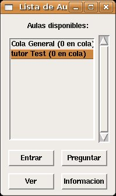
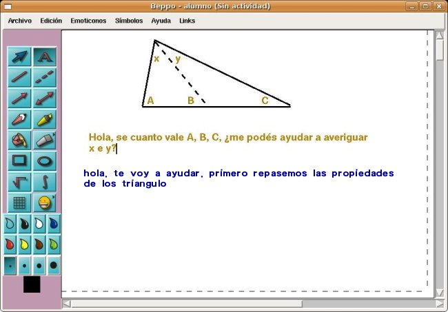

Beppo, la pizarra virtual, es un chat con nuevas funcionalidades, las cuales lo hacen óptimo para la enseñanza online. Una de las principales características es que es muy fácil de utilizar, a continuación una rápida introducción a su manejo:
Al iniciar la aplicación se abrirá una ventana, en la cual te deberás loguear (entrar al sistema) con el nombre de usuario y la contraseña que te haya asignado la institución con la cual contrataste el servicio.

Ventana de login al sistema .
Luego de entrar al sistema, aparecera la pizarra virtual de Beppo. Esta ventana luce muy similar a muchos editores de imagenes incluidos en distintos sistemas operativos. En esta pantalla deberás escribir tu consulta.

La pizarra virtual de Beppo.

La herramientas para escribir en la pizarra virtual.
El uso de la pizarra virtual es bastante intuitivo. A continuación una breve descripcion de las herramientas:
Con las distintas herramientas, podrás escribir tu consulta. Un punto importante para destacar es que el sistema no contabiliza el tiempo que utilices para introducir la consulta. A continuación un ejemplo de una posible pregunta:

Una pregunta de geometria.
Una vez terminada de escribir la consulta, deberás elegir el tema sobre el cual vas a preguntar. Para eso debes ir a "Archivo -> Lista de Materias".

Archivo -> Lista de Materias
Luego aparecerá una nueva ventana con la lista de materias para las cuales damos apoyo. Acá deberas elegir la más acorde con tu duda. En este caso elegiriamos "Geometria".

Lista de Materias.
A continuación, debemos entrar a un aula virtual. Hay un aula por cada profesor que se encuentre en el sistema. Para hacer esto, hacemos click en "Archivo" y luego en "Lista de Aulas".

"Archivo -> Lista de Aula".
Luego de esto va a aparecer una nueva ventana con las aulas disponibles en la que hay un profesor enseñando la materia que elegiste y alguna información general del estado del sistema. Por ejemplo, si fuera el caso de la siguiente imagen, en la cola general del sistema no habria personas y sólo habría un aula disponible, con el tutor llamado "tutor Test". Está aula se encontraría vacia, por eso hay "0 en cola".

Lista de Aulas
En este momento habrá varias opciones:
Luego de entrar al aula, el profesor verá la pregunta y decidirá si se encuentra en condiciones de responder la misma. En caso de que si, se comenzará con la clase online. Usando la pizarra podrás interactuar con el tutor en tiempo real y así obtener ayuda para resolver todas tus dudas.

Clase online.